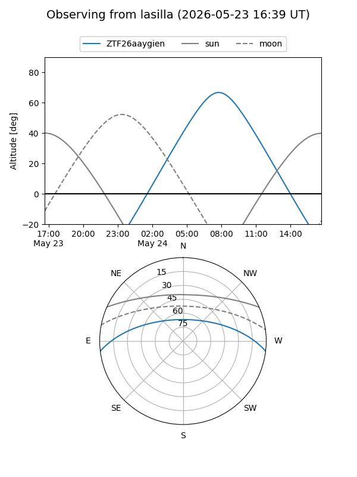
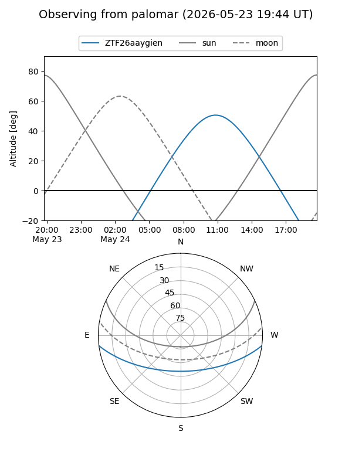

ZTF26aaygien
Target ZTF26aaygien at 2026-05-23 12:38
Aliases and brokers:
lsst-FINK: link
lsst-Lasair: link
lsst-ALeRCE: link
ztf-FINK: link
ztf-Lasair: link
ztf-ALeRCE: link
alt names
ZTF26aaygien (ztf,fink_ztf)
Coordinates:
equatorial (ra, dec) = 287.3050,-6.11333
equatorial (HMS+DMS) = 19:09:13.19,-06:06:48.00
galactic (l, b) = (29.4892,-6.72774)
Flags:
Photometry:
last ztfg=16.25
1 ztfg detections
Lightcurve
Visibility


Additional plots